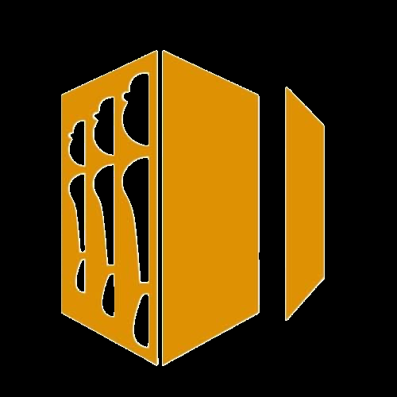
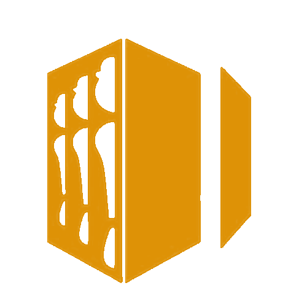

PrzystanekPomarańczowe dni są już zajęte. Wybierz wolny termin.
Wybrana data: brak
kolektyw
r4b4n to kolektyw założony ze wspólnej zajawki do muzyki przez dwóch poznańskich DJ-ów: Pustego i Grajka.
Chcemy pokazywać, że oprócz zabawy i grania muzy można się też czegoś nauczyć, dowiedzieć i wybrać w podróż po różnych dźwiękach. Oboje jesteśmy wielogatunkowi w swoich setach, a łączy nas jedno: lubimy dobry bass.
Chcesz nas usłyszeć na żywo? Śledź stronę i nasze social media. Pozdro!
Cykl 2FACES powstał z myślą o połączeniu dwóch światów: muzyki komercyjnej, która ma dostarczać zabawy, oraz poszerzania świadomości o muzyce elektronicznej.
Dlatego podzieliliśmy go na dwa formaty:
Jeśli podoba Ci się ten pomysł, wpadaj do nas!
Pierwsza edycja już 14.11!